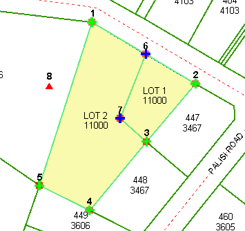
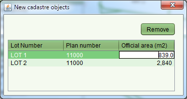

You can create new parcels using the Create New Parcel tool. Using the tool, single click each
survey point of the new parcel in sequence in either a clockwise or anti-clockwise direction
and double click on the final survey point to close the parcel boundary. The new parcel will
display with a green border and yellow fill.
Create New Parcel tool. Using the tool, single click each
survey point of the new parcel in sequence in either a clockwise or anti-clockwise direction
and double click on the final survey point to close the parcel boundary. The new parcel will
display with a green border and yellow fill.

New Parcels
If you make a mistake while forming the new parcel, right click to cancel the shape and start again.
To edit the identifier for the new parcel, use the Parcel List tool to open the Parcel List screen and
update the Lot Number as required. You can also use the Parcel List to remove a new parcel if
it is created in error as well as set the official area for the parcel.
Parcel List tool to open the Parcel List screen and
update the Lot Number as required. You can also use the Parcel List to remove a new parcel if
it is created in error as well as set the official area for the parcel.

Parcel List